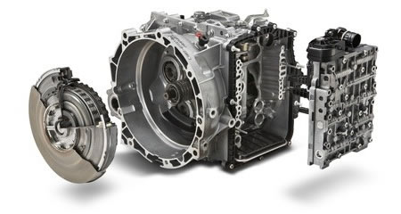

1. Входная диагностика - представляет собой тестдрайв автомобиля, если он еще едет, а также электронную диагностику с помощью прибора;
2. Снятие АКПП - автомобиль загоняют на подъемник и снимают автоматическую коробку, как правило цена на эту процедуру зависит от того, какой привод на автомобиле;
3. Разбора и дефектовка АКПП - коробку разбирают и выявляют неисправные детали, требующие замены;
4. Составление дефектовочной ведомости - составляется список неисправных деталей и их стоимости;
5. Согласование окончательной стоимость ремонта с клиентом;
6. Ремонт гидротрансформатора - за редким исключением, при ремонте автоматов, этот узел подлежит замене или ремонту;
7. Непосредственно сам ремонт акпп, т.е. сборка автоматической коробки с новыми исправными деталями;
8. Установка акпп на автомобиль;
9. Выходная диагностика - тестдрайв автомобиля и устранение неисправностей, если они возникли.
Для того, чтобы правильно установить дефект трансмиссии, причины этого дефекта и хотя бы ориентировочные затраты для его устранения, необходимо произвести диагностику. Диагностика АКПП состоит из следующих этапов: -проверка состояния, качества и уровня масла в АКПП. Эта проверка позволяет по цвету, запаху и вязкости масла, а так же по наличию примесей предварительно определить дефект. Обычный цвет масла розово-красный. -компьютерная диагностика. Эта проверка позволяет проверить всю систему электронного управления (датчики, проводка, соленоиды, компьютер управления) и определить какие из этих элементов вышли из строя. -тестовый заезд. Этот вид проверки позволяет определить качество работы АКПП и своевременность моментов переключения передач. Необходимость этого теста велика. Даже при характерных, уже ранее определённых дефектах, необходимо знать качество переключений, чтобы во время ремонта обратить повышенное внимание на этот аспект.
Демонтаж трансмиссии производится автомеханниками в рабочих участках автосервиса, оснащённых автоподъёмниками, и затем снятая АКПП передаётся в ремонтный цех, где непосредственно и ремонтируется.
Это самая сложная и ответственная операция из всего реставрационного цикла. Эту операцию выполняют квалифицированные мастера имеющие за плечами не только высшее образование, но и специальную подготовку по курсу «Автоматические траисмиссии».
В результате этого этапа определяются все детали, которые необходимо заменить для нормальной работы АКПП. Очень важно правильно произвести дефектацию, так как от этого зависит конечный результат работы. Далее составляется смета ремонта, согласовывается с клиентом и начинается второй этап.
Сборка АКПП. На этом этапе все детали коробки передач, корпуса и крышки помещаются в специальную моечную машину и пока они моются, мастер подготавливает к установке новые детали. Как только процесс мойки закончен, мастер начинает непосредственную сборку агрегата. Наиболее часто меняемые детали – это ремонтные комплект прокладок, уплотнительных колец, сальников и комплекты фрикционных и металлических дисков. Но для каждой модели АКПП есть ряд деталей, которые необходимо заменить для длительной и качественной работы АКПП.
По окончанию сборочного процесса готовый, укомплектованный агрегат возвращается автомеханикам для монтажа на автомобиль. При установке АКПП необходимо учитывать очень много нюансов, которые и обеспечивают качественную работу АКПП. Согласование работы АКПП с работой двигателя является сложной операцией. Например, регулировка давления в АКПП у более старых моделей производится механическим путём, в то время как у более новых моделей этот процесс выполняется с помощью програмного обеспечения.
Проверка АКПП осуществляется на дороге при езде на различных режимах, с разной нагрузкой и ускорением. Важно проверять работу трансмиссии как на горячем, так и на холодном моторе. При необходимости осуществляется дополнительные регулировки. Последняя проверка – визуальная проверка на герметичность и отсутствие подтёков масла.